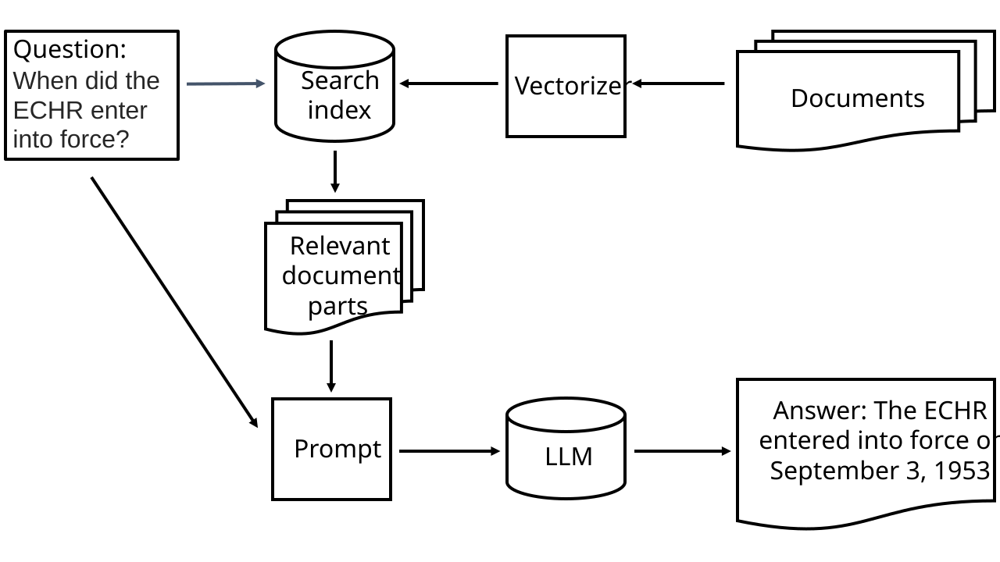

Retrieval-Augmented Generation#
Retrieval-Augmented Generation (RAG) is a method for including (parts of) matching documents as context for questions to a Large Language Model (LLM). This can help reduce hallucinations and wrong answers. A system for RAG has two major parts: a document database with a search index and a large language model. The figure below shows the structure of our RAG program.

When the user asks a question, the question is handled in two stages. First, the question is used as a search query for the document database. The search results are then sent together with the question to the LLM. The LLM is prompted to answer the question based on the context in the search results.
We will use LangChain, an open-source library for making applications with LLMs. This chapter was inspired by the article Retrieval-Augmented Generation (RAG) with open-source Hugging Face LLMs using LangChain.
Document location#
We have collected some papers licensed with a Creative Commons license. We will try to load all the documents in the folder defined below. If you prefer, you can change this to a different folder name.
document_folder = '/fp/projects01/ec443/documents'
The Language Model#
We’ll use models from HuggingFace, a website that has tools and models for machine learning. We’ll use the open-weights LLM mistralai/Mistral-7B-Instruct-v0.3. This model is small enough to fit on a GPU with only 40 GB memory. If you run on a GPU with more memory, you can get better results with a large model, such as mistralai/Ministral-8B-Instruct-2410.
Model Storage Location#
We must download the model we want to use. Because of the requirements mentioned above, we run our program on the Fox high-performance computer at UiO. We must set the location where our program should store the models that we download from HuggingFace:
%env HF_HOME=/fp/projects01/ec443/huggingface/cache/
Note
If you run the program locally on your own computer, you might not need to set HF_HOME.
The Model#
Now, we are ready to download and use the model.
To use the model, we create a pipeline.
A pipeline can consist of several processing steps, but in this case, we only need one step.
We can use the method HuggingFacePipeline.from_model_id(), which automatically downloads the specified model from HuggingFace.
from langchain_huggingface.llms import HuggingFacePipeline
llm = HuggingFacePipeline.from_model_id(
model_id='mistralai/Mistral-7B-Instruct-v0.3',
task='text-generation',
device=0,
pipeline_kwargs={
'max_new_tokens': 500,
'do_sample': True,
'temperature': 0.3,
'num_beams': 4
}
)
Pipeline Arguments
We give some arguments to the pipeline:
model_id: the name of the model on HuggingFacetask: the task you want to use the model for, other alternatives are translation and summarizationdevice: the GPU hardware device to use. If we don’t specify a device, no GPU will be used.pipeline_kwargs: additional parameters that are passed to the model.max_new_tokens: maximum length of the generated textdo_sample: by default, the most likely next word is chosen. This makes the output deterministic. We can introduce some randomness by sampling among the most likely words instead.temperature: the temperature controls the statistical distribution of the next word and is usually between 0 and 1. A low temperature increases the probability of common words. A high temperature increases the probability of outputting a rare word. Model makers often recommend a temperature setting, which we can use as a starting point.num_beams: by default the model works with a single sequence of tokens/words. With beam search, the program builds multiple sequences at the same time, and then selects the best one in the end.
Tip
If you’re working on a computer with less memory, you might need to try a smaller model.
You can try for example mistralai/Mistral-7B-Instruct-v0.3 or meta-llama/Llama-3.2-1B-Instruct.
The latter has only 1 billion parameters, and might be possible to use on a laptop, depending on how much memory it has.
If you use models from Meta, you might need to set pad_token_id:
llm.pipeline.tokenizer.pad_token_id = llm.pipeline.tokenizer.eos_token_id
Using the Language Model#
Now, the language model is ready to use. Let’s try to use only the language model without RAG. We can send it a query:
# Use with models from Meta
#llm.pipeline.tokenizer.pad_token_id = llm.pipeline.tokenizer.eos_token_id
query = 'What are the major contributions of the Trivandrum Observatory?'
output = llm.invoke(query)
from IPython.display import Markdown
display(Markdown(output))
This answer was generated based only on the information contained in the language model. To improve the accuracy of the answer, we can provide the language model with additional context for our query. To do that, we must load our document collection.
The Vectorizer#
Text must be vectorized before it can be processed. Our HuggingFace pipeline will do that automatically for the large language model. But we must make a vectorizer for the search index for our documents database. We use a vectorizer called a word embedding model from HuggingFace. Again, the HuggingFace library will automatically download the model.
from langchain_community.embeddings import HuggingFaceBgeEmbeddings
huggingface_embeddings = HuggingFaceBgeEmbeddings(
model_name='BAAI/bge-m3',
model_kwargs = {'device': 'cuda:0'},
#or: model_kwargs={'device':'cpu'},
encode_kwargs={'normalize_embeddings': True}
)
Loading the Documents#
We use DirectoryLoader from LangChain to load all in files in document_folder.
documents_folder is defined above.
from langchain_community.document_loaders import DirectoryLoader
loader = DirectoryLoader(document_folder)
documents = loader.load()
The document loader loads each file as a separate document.
We can check how long our documents are.
For example, we can use the function max() to find the length of the longest document.
print(f'Number of documents:', len(documents))
print('Maximum document length: ', max([len(doc.page_content) for doc in documents]))
We can examine one of the documents:
print(documents[0])
Splitting the Documents#
Since we are only using PDFs with quite short pages, we can use them as they are. Other, longer documents, for example the documents or webpages, we might need to split into chunks. We can use a text splitter from LangChain to split documents.
from langchain.text_splitter import RecursiveCharacterTextSplitter
text_splitter = RecursiveCharacterTextSplitter(
chunk_size = 700, # Could be more, for larger models like mistralai/Ministral-8B-Instruct-2410
chunk_overlap = 200,
)
documents = text_splitter.split_documents(documents)
Text Splitter Arguments
These are the arguments to the text splitter:
‘chunk_size’: the number of tokens in each chunk. Not necessarily the same as the number of words.
‘chunk_overlap’: the number of tokens that are included in both chunks where the text is split.
We can check if the maximum document length has changed:
print(f'Number of documents:', len(documents))
print('Maximum document length: ', max([len(doc.page_content) for doc in documents]))
The Document Index#
Next, we make a search index for our documents. We will use this index for the retrieval part of ‘Retrieval-Augmented Generation’. We use the open-source library FAISS (Facebook AI Similarity Search) through LangChain.
from langchain_community.vectorstores import FAISS
vectorstore = FAISS.from_documents(documents, huggingface_embeddings)
FAISS can find documents that match a search query:
relevant_documents = vectorstore.similarity_search(query)
print(f'Number of documents found: {len(relevant_documents)}')
We can display the first document:
print(relevant_documents[0].page_content)
For our RAG application we need to access the search engine through an interface called a retriever:
retriever = vectorstore.as_retriever(search_kwargs={'k': 3})
Retriever Arguments
These are the arguments to the retriever:
‘k’: the number of documents to return (kNN search)
Making a Prompt#
We can use a prompt to tell the language model how to answer. The prompt should contain a few short, helpful instructions. In addition, we provide placeholders for the context and the question. LangChain replaces these with the actual context and question when we execute a query.
from langchain.prompts import PromptTemplate
prompt_template = '''You are an assistant for question-answering tasks.
Use the following pieces of retrieved context to answer the question.
Context: {context}
Question: {input}
Answer:
'''
prompt = PromptTemplate(template=prompt_template,
input_variables=['context', 'input'])
Making the «Chatbot»#
Now we can use the module create_retrieval_chain from LangChain to make an agent for answering questions, a «chatbot».
from langchain.chains import create_retrieval_chain
from langchain.chains.combine_documents import create_stuff_documents_chain
combine_documents_chain = create_stuff_documents_chain(llm, prompt)
rag_chain = create_retrieval_chain(retriever, combine_documents_chain)
Asking the «Chatbot»#
Now, we can send our query to the chatbot.
result = rag_chain.invoke({'input': query})
print(result['answer'])
Hopefully, this answer contains information from the context that wasn’t in the previous answer, when we queried only the language model without RAG.